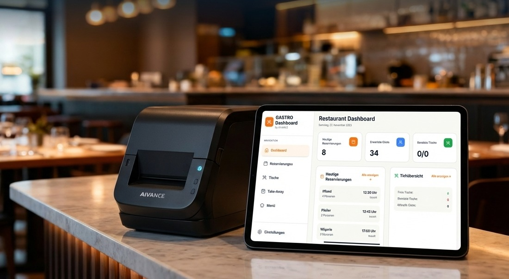

Referenzen
Echte Projekte, messbare Ergebnisse. Wir zeigen Ihnen konkret, was KI-Automatisierung in der Praxis leistet.
0
Abgeschlossene Projekte
96%
Kundenzufriedenheit
−79%
Manuelle Arbeit (Ø)
17 Tage
Ø Zeit bis Go-Live
Vollautomatisierter KI-Assistent · Rhein-Neckar Region
Ein wachsendes Restaurant im Rhein-Neckar-Gebiet kämpfte täglich mit hunderten manuell bearbeiteten Anfragen zu Reservierungen, Öffnungszeiten und Speisekarten. Das Team verlor wertvolle Zeit — besonders in Stoßzeiten.
AIVANCE implementierte einen RAG-basierten KI-Assistenten, der nahtlos in die bestehende Infrastruktur integriert wurde — über WhatsApp Business API und die Website. Der Agent indexiert Speisekarte, Verfügbarkeiten und Unternehmensrichtlinien in Echtzeit.
Was wir gebaut haben
RAG-System mit Echtzeit-Indexierung der Speisekarte und Reservierungsdaten
WhatsApp Business API Integration mit automatischer Reservierungsbestätigung
Manager-Dashboard mit Echtzeit-Auslastung, Umsatz und Bewertungsanalyse
Automatisches Eskalations-Routing an menschliche Mitarbeiter bei komplexen Anfragen

Live Dashboard
AIVANCE GASTRO System
Messbare Ergebnisse nach 90 Tagen
Manuelle Anfragen pro Woche
↓ 78% weniger manuelle Bearbeitung
Kundenzufriedenheit
Basierend auf 48 Bewertungen
Antwortzeit-Entwicklung
Beispiel-Konversation
"Seit AIVANCE können wir uns endlich auf das Wesentliche konzentrieren: unsere Gäste. Die KI beantwortet Anfragen schneller und präziser als wir es je manuell konnten. Ein echter Gamechanger für unser Team."
Inhaber, Restaurant
Rhein-Neckar Region · Gastronomie
KI-Agent Fragen & Antworten
RAG-System · Rhein-Neckar Region · B2B / HR
Mittelständische Unternehmen im Rhein-Neckar-Gebiet verloren pro neuen Mitarbeitenden durchschnittlich 3–4 Arbeitstage durch manuelles Onboarding — vom HR-Team bis zur Führungskraft. Repetitive Fragen zu Prozessen, Tools und Richtlinien blockierten das Team täglich.
AIVANCE baute ein intelligentes Onboarding-RAG-System, das die gesamte Wissensbasis des Unternehmens indexiert. Neue Mitarbeitende erhalten sofort präzise Antworten — über Slack, Teams oder Web — ohne ein Ticket zu öffnen.
Was wir gebaut haben
RAG-Index über alle Unternehmensrichtlinien, Prozesse und HR-Dokumente
Slack-Bot mit personalisiertem Onboarding-Plan und automatischer Fortschriftsverfolgung
Notion-Integration: Wissensbasis synchron und immer aktuell
HR-Dashboard: Überblick über alle laufenden Onboardings und offene Aufgaben
Messbare Ergebnisse nach 60 Tagen
HR-Anfragen
Self-Service durch KI-Agent
Onboarding-Zeit
Von 7 auf 4 Tage reduziert
Zufriedenheit
Neue Mitarbeiter-Feedback
Fragen pro neuem Mitarbeiter (erste Woche)
Antwortgeschwindigkeit
"Unser HR-Team wurde täglich mit denselben Fragen überflutet. AIVANCE hat das vollständig gelöst. Neue Kollegen fühlen sich ab Tag 1 gut betreut und wir können uns auf strategische Aufgaben konzentrieren. Die Implementierung war professionell und schneller als erwartet."
HR-Leitung
Mittelständisches Unternehmen · Rhein-Neckar Region
Wir analysieren Ihre Prozesse kostenlos und zeigen Ihnen konkret, wo KI-Automatisierung den größten Mehrwert bringt.